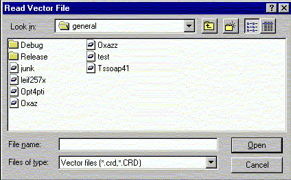

**************************************************************************
Import coordinates widget
Leif Laaksonen CSC 1997
**************************************************************************
Import information defining a vector property for the atoms in a molecule. The format is the same as in the CRD files apart from that the coordinate information defines now the vector direction in the x,y and z directions.

Line command: see import command
**************************************************************************
LUL/1997
**************************************************************************